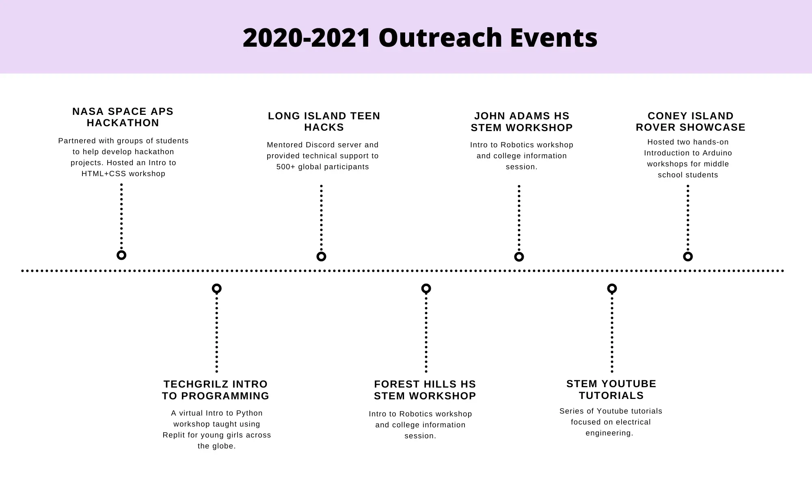

NYU Robotics Design Team Outreach Coordinator

Project Summary
As the head outreach coordiator for the NYU Robotics Design Team, I was responsible for creating new educational opportunities for students across the globe and for managing teams of volunteers in order to develop lesson plans based in engineering and programming for K-12 students.
I collaborated with non-profit organizations and local schools in order to work with students worldwide in my pursuit of making education more accessible no matter where you’re located. In 2021, I received recognition for my efforts through the NASA Lunabotics Outreach Award.
- Date: September 2020 - June 2023
Outreach Road Maps
- 

During these three years, I organized a multitude of both in-person and virtual events that were completely free to attend for all our students. These workshops were usually focused around one of three engineering disciplines including mechanical, software, and electrical engineering. Following the conclusion of our workshops, we would provide our students with free resources to continue learning about the discussed topics.
All of our workshops featured original lesson plans that were created by myself and numerous volunteers. As the head educator, I would lead communication between our engineers and ensure that the information discussed would be able to properly reach our target demographic through our slides and activites. In addition to this, I would manage our overall timeline for the year and ensure that we had all the proper materials and marketing prior to each event. More information about some of our larger events can be found below.
Tech Girlz Robotics Workshops
In collaboration with the nonprofit organization TechGirlz, I developed lesson plans for various online workshops centered on mechanical, electrical, and software engineering. These workshops were aimed at 5th-8th grade girls across the United States and were held virtually in order to boost accessibility and allow as many girls as possible to join.
Since 2020, I’ve hosted around 10 workshops and led groups of volunteer engineers to help as teacher assistants during our lessons. We covered a variety of topics including Computer-Aided Design, 3D printing, an introduction to Python, and an introduction to Arduino wiring. Beginning in 2021, we began to host yearly robotics training camps consisting of three back-to-back weekly workshops aimed to get the girls excited about space exploration and engineering.
Workshops in Science & Engineering (WISE)
In collaboration with the nonprofit organization The Center for K12 STEM Education at NYU Tandon, I was able to create a series of workshops that would each tackle a different engineering discipline. Our aim was to increase accessibility to higher-quality educational experiences for students across the five boroughs of New York and by extension, students from Long Island and New Jersey, a first for the organization.
The program we established, Workshops in Science and Engineering (WISE), is aimed at middle school students with an interest in learning more about engineering outside the classroom. The WISE program took place over the span of three weeks with virtual weekend workshops dedicated to programming, electrical engineering, and mechanical engineering.
The first of the workshops was an introduction to programming using Python. The next week, we tackled teaching computer aided design and 3D printing through TinkerCAD. Finally, we ended with an introduction to Arduino wiring and programming, allowing students to build a series of circuits and programming them to activate. In total, over 200 students attended our program.

Hackathon Mentorships
Given the extended period of online learning that followed after the rapid expansion of the COVID-19 pandemic, I began to focus on an online model of education by volunteering at various hackathon events as both a mentor and a judge. With this, I also served as a lead educator on a variety of workshops hosted for free to all hackathon participants. These workshops included various introduction to programming fundamentals in both C++ and Python, as well as an introduction to the NASA Artemis mission and the NASA Lunabotics competitions that placed an emphasis on raising awareness among younger generations towards the increasing opportunities for space exploration.
Some notable hackathons I had partnered with included Treasure Hacks, Bay Area Hacks, Long Island Teen Hacks, Norcal Hacks, Metro Hacks, and InfiniHacks. I currently serve as a full-time volunteer mentor on the TreasureHacks community board in order to provide year-round assistance to any students in need of feedback on personal projects or technical support.Westlake STEAM Symposium Workshops
In partnership with Westlake Middle/Highschool, I hosted various introduction to electrical engineering through Arduino workshops during their yearly STEAM Symposium. The Symposium aimed to get students interested in hands on STEAM activities following the pause in extracurriculars during the COVID-19 pandemic.
Our first workshop was aimed at 6th grade students, followed by another workshop taught to highschool students. Both sets of students were able to get experience testing out their wiring and programming skills through a series of activities aimed around using LED’s and various sensors.
This extended into 2023, where I returned alongside another volunteer to continue teaching new students. This time, we had taught two cohorts of 5th grade students. I plan to continue this yearly partnership and look forward to supporting Westlake in their future endeavours.
Outreach Written Reports
Towards the end of each competitive season, I would compile information detailing our various events and statistics about each one into a written document that would be sent to the judges of the NASA Lunabotics Competition.
These reports would feature indepth explanations for each of our workshops, grade level breakdowns of our participants, and feedback we would receive from the students following their experience so that we could continue improving our lesson plans for the following cohert. As the outreach lead, this required me to take meticulous notes throughout the year and to head the writing committee, ensuring that our information was well written and accurate to what we had contributed to the STEAM community, as well as creating various graphics for said data.
Reflection
My experience as outreach lead was an incredibly valuable one that has connected me to a variety of people in my pursuit of making “out of the classroom” educational experiences more accessible for anyone wanting to learn about technology and robotics.
Given that we had different types of lessons for students depending on their grade levels, I made sure to give our participants the opportunity to voice their opinions anonymously after each workshop to learn about what was clicking with them, and what could possibly require more explanation. In doing so, we were able to become really aware of what students wanted to learn and found ways to shape our lesson plans to appeal to their interests.
In 2021, I was awarded a NASA Lunabotics Outreach Award for my efforts in ensuring that various communities across the world could continue having access to educational STEAM opportunities during the COVID-19 pandemic. The shift to online learning had allowed us to connect with hundreds of students across the globe in a manner that we were never able to before, only highlighting the demand for educators and the eagerness many students have to learn about the world around them and where the future of technology is heading.